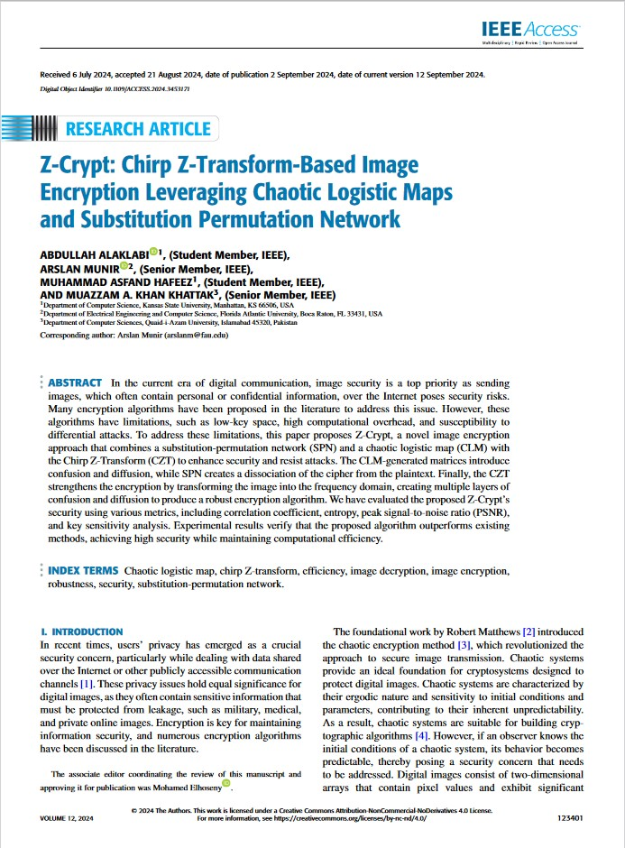
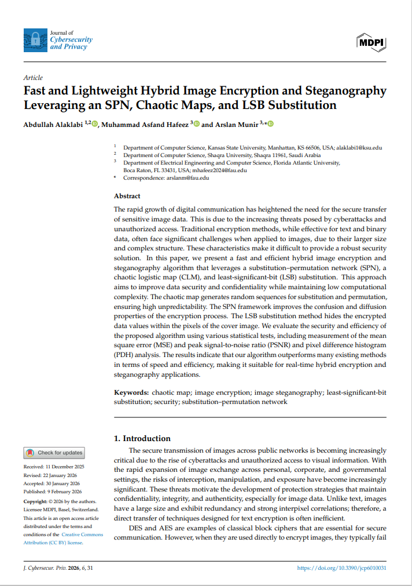

I am a Ph.D. Candidate in Computer Science at the Department of Computer Science, Kansas State University, advised by Dr. Arslan Munir. I am a member of the ISCAAS Lab, and my research focuses on multimedia security, including image encryption, steganography, and video encryption.
I earned M.S. in Software Engineering from the University of St. Thomas, Minnesota in 2020, and B.S. in Software Engineering from the University of Hail, Saudi Arabia in 2011. I have been affiliated with Shaqra University since 2014 and currently serve as a Lecturer in the Department of Computer Science.
I am always open to academic collaboration and welcome opportunities to work on security-driven multimedia research. Please feel free to contact me.
Research interests:Email (Kansas State University) / Email (Shaqra University) / LinkedIn / Google Scholar
My research interests include multimedia encryption, chaotic systems, and cryptography.
|  |
Z-Crypt: Chirp Z-Transform-Based Image Encryption Leveraging Chaotic Logistic Maps and Substitution Permutation Network
Abdullah Alaklabi; Arslan Munir; Muhammad Asfand Hafeez; Muazzam A. Khan Khattak IEEE Access, 2024 IEEE / DOI / code A secure and efficient scheme combining Substitution-Permutation Networks (SPNs), chaotic logistic maps, and Chirp Z-Transform (CZT) for robust image encryption. The approach ensures high entropy, sensitivity, and imperceptibility. |
|  |
Fast and Lightweight Hybrid Image Encryption and Steganography Leveraging an SPN, Chaotic Maps, and LSB Substitution
Abdullah Alaklabi; Muhammad Asfand Hafeez; Arslan Munir Journal of Cybersecurity and Privacy, 2026, 6(1), 31 MDPI / DOI / code This paper introduces a fast and efficient hybrid security framework that combines image encryption and steganography to protect sensitive visual data. By integrating a substitution–permutation network (SPN), chaotic logistic maps, and LSB substitution, the proposed method achieves strong confusion and diffusion while maintaining low computational complexity. Extensive statistical evaluations demonstrate high security, speed, and suitability for real-time secure image transmission. |
To be added.
To be added.